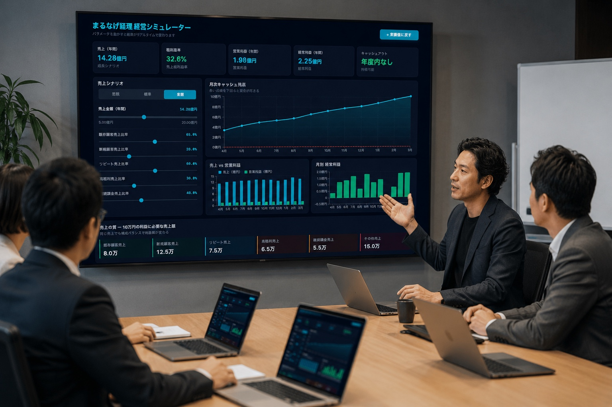
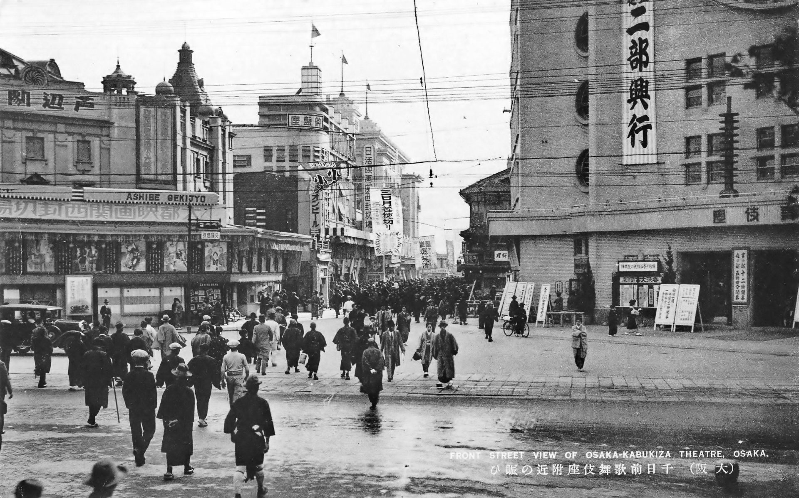
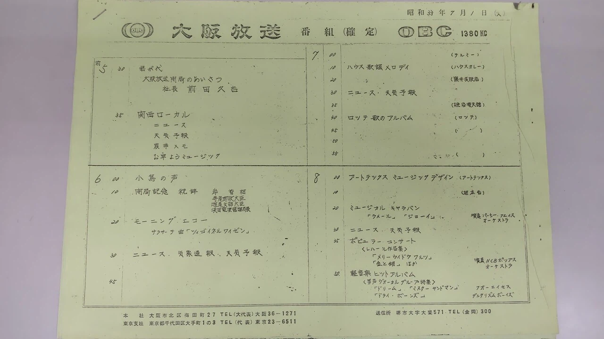
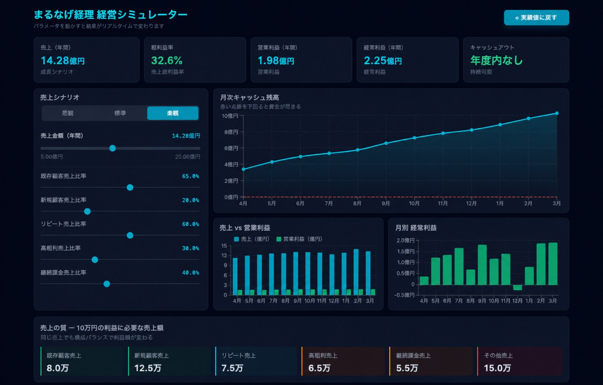
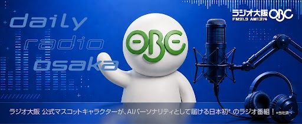
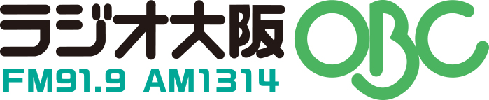
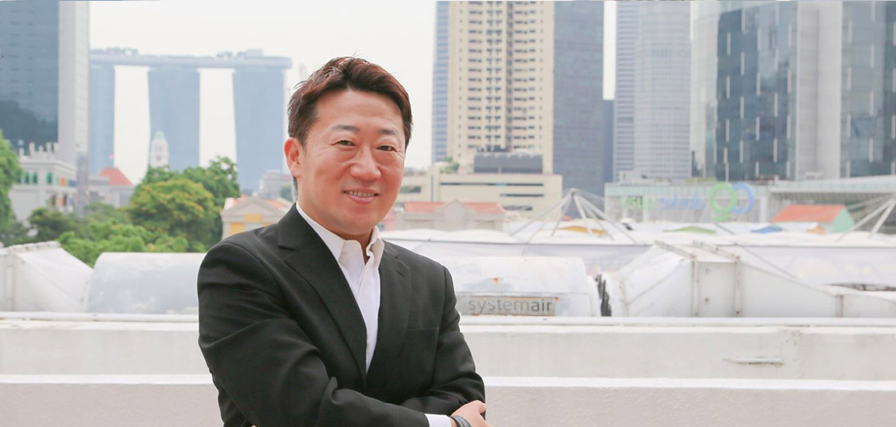
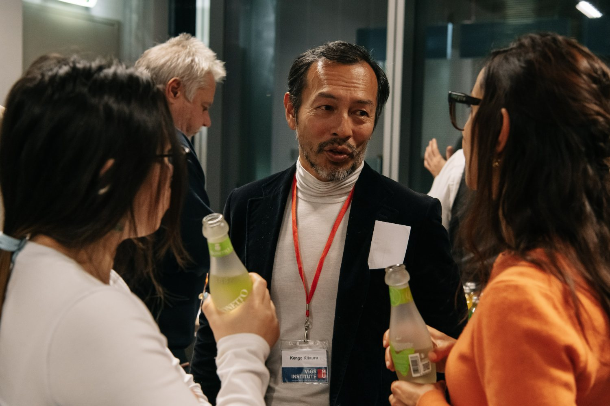

01経営からの逆算
“どんな数字で経営判断したいか”という出口から、日々の入力までを設計し直します。道具より先に、設計を。

OSAKA HOSO CO., LTD. ／ SINCE 1945
1945年、大阪の鉄の会社として創業。私たち大阪放送は今、企業のAI/DX変革を中核事業としています。その何よりの証明が——大阪放送が出資する〈ラジオ大阪〉に私たち自身が一員として入り込み、現場から経理まで丸ごとAI化した実績です。
古写真：千日前・歌舞伎座付近（大阪／1933年）
Wikimedia Commons ／ Public Domain
About Us
大阪放送株式会社は、1945年の創業以来、80年にわたり大阪に根ざしてきた会社です。時代とともに事業の姿を変えながら、変わらず大切にしてきたのは“信用”の二文字。いま私たちは、その信用を土台に、企業のAI/DX変革という新しい事業に挑んでいます。
 現在
現在
Our Business
世の中のAI活用は、もともとデジタルに強い新しい会社のものだと思われがちです。しかし私たちの考えは逆です。紙が多く、人手に頼り、長年同じやり方を続けてきた“古い組織”ほど、AIで劇的に変わる余地が大きい。 私たちは、経理・財務をはじめとする企業のバックオフィスを、AIを使って丸ごと設計し直します。

01“どんな数字で経営判断したいか”という出口から、日々の入力までを設計し直します。道具より先に、設計を。
AIに“何をやらせるか”を見抜くことが本質。ツールを渡して終わりではなく、成果が出る仕組みごとお渡しします。
構想から実装までを、AIを駆使して常識外の速さで形にします。
Proof
最初の実証相手は、自分たち自身でした。大阪放送が出資する〈ラジオ大阪（OBC）〉——1958年開局、長くアナログの蓄積を持つ放送局。その現場に、私たち自身が一員として入り込み、経理から番組づくりまで、手を動かしてAI化を進めてきました。 外から評価するのではなく、中から変える。いちばん手強い相手から始めた。それが、何よりの実績です。

資料
現在紙の伝票、手作業の集計、属人化した経理。
AIによる自動仕訳・自動分析、リアルタイムで見える経営数字。
紙とハンコの放送局が、こう変わりました。
2,500〜3,000件 / 月
の仕訳を、AIで自動処理しています。
あらゆる紙の伝票と、何名分もの承認印を廃止。発注・振替・請求・経費——そのすべてを電子化しました。
「紙で起こす → 転記 → 入力 → また紙で集計 → エクセルに手入力」という何重もの転記を、まるごと撤廃。
ベテランの“頭の中”にしかなかった例外処理を整理。同じ処理に何通りもの経路があった状態を解き、誰がやっても同じ結果が出る経理へ。
その日のワイド番組で放送した全トピックスを、AIが約20分の音声に自動でまとめ、毎日お届けする新サービス。さらに、ラジオ大阪のキャラクター〈弁天おび氏〉がAIアナウンサーに就任。AIは“裏方の効率化”にとどまらず、リスナーに届く番組そのものにまで及んでいます。
PLUS IMPACT株式会社とのタイアップで誕生しました。

YouTubeで聴く机上の空論は、語りません。
自分たちで実証したからこそ、自信を持ってお客様にお届けできます。
Column
AI導入の最前線で見えたこと、わかったことを、率直に綴っています。
AI経理の費用対効果を、出資先のラジオ大阪（OBC）の実例から数字で。年間1,690万円削減、投資回収1.8ヶ月。
読む→ 2026.06.041958年開局のラジオ大阪（OBC）に経営陣として入り込んだ。30年分の会計データが完璧に残る一方、経営に使える形にはなっていなかった。
読む→ 2026.06.04AIは80%まではすごい。問題はその先にある。OBCの経理自動化プロジェクトで直面した「存在しない問題を作り出すAI」。
読む→Group

株式会社ラジオ大阪（OBC） OBC公式サイトHistory
1945年の創業から、2026年の生まれ変わりまで。

丸一商会として創業（創業者 加藤源太郎）。
12月17日、丸一興産株式会社として設立。
加藤勝弘（1979）／ 加藤昌孝（2003）／ 加藤順彦（2017）と承継。
本店を此花区常吉へ移転。
株式会社ラジオ大阪（OBC）へ出資。加藤順彦が同社代表取締役会長に就任。
5月20日、商号を「大阪放送株式会社」に変更。事業目的に経営コンサルティング・AI（人工知能）開発／導入支援等を加え、企業のAI/DX変革を中核事業に据える。
資料Message
ひとりの男が築いた会社は、80年の時を経て、いま二人の手に委ねられている。受け継ぐ者と、変える者。

現在代表取締役（株式会社ラジオ大阪 代表取締役会長 兼務）
1967年生まれ、大阪育ち。関西学院大学在学中から起業の世界に身を投じ、1992年に広告会社・日広（現GMO NIKKO）を創業。2008年に同社をGMOインターネットグループへ譲渡し、シンガポールへ拠点を移す。以後、アジアを舞台に80社を超える日本人スタートアップを支援するエンジェル事業家として活動。2017年、80年つづく家業・丸１グループを承継し、その代表に就く。
家業の重みも、新しい事業の最前線も——その両方を知る人間として。加藤は、長い歴史を刻んできた放送局〈ラジオ大阪〉の、これからに本気で向き合うことを選んだ。出資して、あとは任せる——そういう距離の取り方ではない。会社として総力をあげて支え、自らも一人の人間として現場に入る。その姿勢を内外にはっきりと示すために、80年つづく家業の社名を、〈大阪放送〉へと改めた。ラジオ大阪の、さらなる発展のために。会社も、自分自身も、全力で。
社名を変えてまで、示したかった。——本気で、ともに前へ進む、と。
その覚悟は、言葉だけではない。加藤の主導で、社内のAI自動化から、AIが番組を要約する〈Dailyラジオ大阪〉まで、具体的なAIサービスが次々と動き出している（⑤ 実証）。

現在取締役（株式会社ラジオ大阪 経営管理部）
大阪生まれ。中学卒業と同時に渡米。帰国後の事業経営を経て、2009年からカンボジアへ。2014年、農業フィンテック企業AGRIBUDDYを創業しCEOに就く。記録も信用情報もない小規模農家の営農データを集めて可視化し、金融につなぐ仕組みを築き、日経FinTech Conference最優秀賞、Global Startup Award『年間最優秀創業者』（ASEAN／カンボジア企業初）などを受賞。2023年に帰国し、現在は企業の経理・管理業務のAIによる自動化に取り組む。
北浦は、評論家ではない。一番デジタルから遠い世界を、自分の手で“動くように”してきた実行者だ。カンボジアの農村で、記録も信用情報もない農家を、データでつなぎ、金融につないだ。古く、紙が多く、人手に頼る組織ほど、テクノロジーで大きく変わる——その確信は、机上ではなく現場で得たものだ。いま北浦は、その同じ力を日本の古い組織へ向けている。大阪放送が出資する〈ラジオ大阪〉のAI化も、現場から経理まで、自ら設計し、つくった。
道具は、誰でも手に入る。違いは“何をやらせるか”を見抜けるかどうか。出口から逆算して、設計し直す。
信頼と、実行力。この二つが揃ったとき、古い組織は、本当に変わる。
Company
Contact
経理・バックオフィスでお困りなら、一度ご相談ください。80年の信用と、自分たちで実証したAIの力で、お応えします。